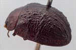
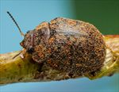
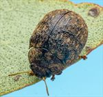
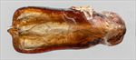
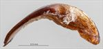
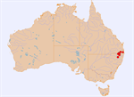

Click on images to enlarge
{kind=link}

Female, Glenlyon, S.E. Queensland
{kind=link}

Male, Amiens, S.E. Queensland
{kind=link}

Female, Greenlands, S.E. Queensland
{kind=link}

Aedeagus, dorsal view (Glenlyon, S.E. Queensland)
{kind=link}

Aedeagus, lateral view (Glenlyon, S.E. Queensland)
{kind=link}

Distribution
Name
Trachymela sp. Ta28
Reference specimen
25-052728, 35km E of Texas, SE Queensland.
Adult Description
Length: ♂ 5.5–6.1 mm (n=4), ♀ 5.8–6.5 mm (n=7).
Colouration:
- Head: dark reddish-brown, often with black areas anterior to clypeal suture and/or sutures broadly black, labrum yellowish, mandibles at least with black tips, the black often extending over much larger area; antennomeres 1–4 straw-brown, 5–7 grading slightly darker brown, 8–11 uniformly reddish-brown.
- Pronotum: brown, concolorous with head, with vaguely defined areas of darker colour (even black) often present in centre of disc, either as a broad central band or along anterior margin extending to centre.
- Scutellum: uniformly black or very dark brown.
- Elytra: brown, fractionally or considerably darker than pronotum, with slightly to considerably darker (even black) verrucae and transverse ridges in a complex pattern over almost all of disc and extending into marginal areas; punctures are similar to or fractionally darker shade than interstices, humeral callus black.
- Venter & Legs: head and prosternum black, thoracic ventrites very dark reddish-brown or black, abdominal ventrites similar or of a slightly paler shade, legs dark reddish-brown, inside surface of elytral epipleura black.
- Cuticular Wax: brown or greyish-brown, sparsely to moderately densely over dorsal surface, the coverage usually quite uneven.
Morphology:
- Head: punctures moderately large (pd ≈ 1.5–2.5×ef), slightly unevenly and densely distributed. Antennae very compact (AL/BL: ♂ 36–38%, ♀ 30–31%), filiform.
- Pronotum: almost evenly curved transversely, foveal depression absent or very shallow with epidermis elevated in a small pustule behind eyes, discal area with surface slightly uneven and puncturation usually clearly impressed, similar in size to that on head but more evenly-sized, relatively evenly distributed and quite dense (spacing ≈ 2–2.5pd), becoming much more coarse at lateral margins. Front margins join lateral margins in a very smoothly and broadly rounded right-angle, with lateral margin initially straight for a short distance before curving smoothly and gradually towards rear margin, broadest about ⅔–¾ of distance to posterio-lateral angle.
- Scutellum: lightly punctured with similar or slightly finer punctures than on adjacent area of pronotum, rarely unpunctured.
- Elytra: surface evenly to slightly unevenly curved with a barely discernable anterio-median depression, punctures large, distinct and relatively evenly distributed in anterior half, smaller and less well-defined on the more granular surface in posterior half, relatively small verrucae, some with fine central puncture, are scattered over much of surface, the most prominent are arranged into an irregular transverse ridge, sometimes slightly discontinuous, rarely barely discernable, extending along the posterior edge of antero-median depression almost from elytral suture to close to elytral margin, other more discrete verrucae are concentrated in area anterior to depression and above humeral callus and in posterior half of disc, the latter often arranged in longitudinal (or less often, transverse) series, surface continuous or very slightly discontinuous under humeral callus. Vertical extension of epipleura small (HCE/PW = 0.34–0.36).
- Venter: prosternal process relatively wide, sides almost parallel, often narrowest in centre, open or lightly closed anteriorly, a very sparse scatter of setae present along prosternal process and on mesoventrite, a single long seta present on each of the anterior and median trochanters and posterior trochanters; front edge of metaventrite beveled, quadrate; inner posterior margin of epipleura lacking setae.
Male Genitalia (Aedeagus):
- Dimensions: short and broad (LPE/BL = 27–29%), trapezoid.
- Dorsal view: sides of shaft sinuate, convex for about 75–80% of length from base then becoming sub-parallel, with widest point (WPE = 0.36–0.38×LPE) close to apex, apical edge almost straight with the prominent triangular tip protruding from its centre, surface smooth and flat, dorso-median channel absent, dorso-lateral channels very short, ostial processes short and broad, ostial depression broad, quadrate.
- Lateral view: shaft curved at about 75° just past base and then very thin and very slightly curved from there to apex, tip slightly deflexed, flagellum thick and short.
Immature Stages
- Unknown.
Similar species
- Ta61: the distribution of this species overlaps with that of Ta28, and individuals are of about the same size and have a transverse weal across the elytra. They differ in the cuticular wax distribution (with that of Ta61 mottled with at least two colour shades) and the transverse weal is usually more strongly developed in Ta61. Ta61 has a lightly punctured common space across the suture which joins with the transverse weals. The pronotum of Ta61 has well-defined black maculae on each side, which are lacking or very diffuse in Ta28. The elytral marginal area is broader in Ta61, with HCE usually > 21% of BL. The aedeagus is very different in the two species.
Notes
- Distribution & Abundance: A small and uncommonly encountered Trachymela species from the highland areas of northern New South Wales and far southern Queensland.
- Host Associations: Individuals have been recorded from Eucalyptus moluccana and E. melliodora (both Symphyomyrtus: Adnataria), as well as unidentified 'smooth-barked eucalypts', one of which was indicated as likely a grey gum.
- Morphological Variation: The head and prothorax are often of a somewhat lighter shade than the elytra. The transverse ridge on the elytra is usually a distinctive feature but may be interrupted, fragmented or barely elevated in a few specimens. The aedeagus is very distinctive with its widest point at the apical extreme.
Copyright © 2026. All rights reserved.